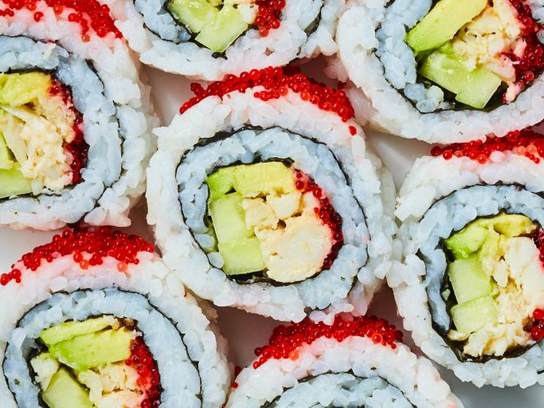

California Rolls

Description
A California roll is a fresh take on traditional Japanese rice rolls.
Filled with avocado, crab, and cucumber, it's fresh and crunchy and makes
a filling meal. You can use real or imitation crab.
Ingredients
- 4 cups of water
- 2 cups of uncooked white rice
- 1/2 cup of seasoned rice vinegar
- 1 tsp of white sugar
- 1 tsp of salt
- 1/4 lb of cooked crab meat, drained of excess liquid and shredded
- 1 tbsp of mayonnaise
- 5 sheets of nori
- 1 avocado, sliced
- 1/4 cup of red caviar, ex: tobiko
- 1 English cucumber, seeded and sliced into strips
- 2 tbsp of drained pickled ginger
- 2 tbsp of soy sauce
- 1 tbsp of wasabi paste
Directions
- Gather all ingredients.
-
Wrap a sushi rolling mat completely in plastic wrap and set aside.
-
Bring water and rice to a boil in a saucepan over high heat. Reduce heat
to medium-low, cover, and simmer until rice is tender and liquid has
been absorbed, 20 to 25 minutes. Transfer rice to a bowl and cut in
vinegar using a rice paddle or wooden spoon. Season with sugar and salt.
Allow to cool to room temperature, about 30 minutes.
- Combine crab meat with mayonnaise in a small bowl.
-
Place nori sheet on a flat work surface. Spread a thin layer of rice on
top of nori.
-
Place nori, rice side down, on the prepared rolling mat. Place 2 to 3
avocado slices on top of the nori in one layer.
- Top with 2 to 3 tablespoons of the crab mixture.
-
Spoon 1 to 2 teaspoons tobiko lengthwise on one side of the avocado-crab
mixture, and 2 cucumber strips on the other side.
-
Using the mat as a guide, carefully roll the California roll into a
tight log. Remove the rolling mat. Top roll with more tobiko, cover with
plastic wrap, and gently press the tobiko into the top of the roll.
-
Remove the plastic and cut into 6 even pieces using a wet knife. Repeat
with remaining sheets of nori and filling. Serve garnished with pickled
ginger, soy sauce, and wasabi paste.